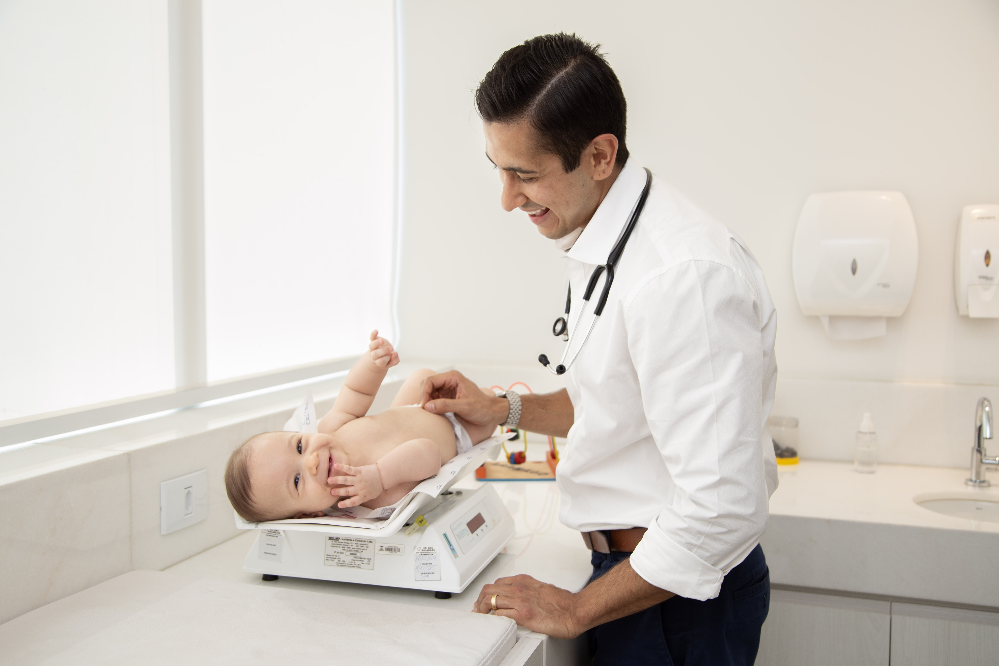
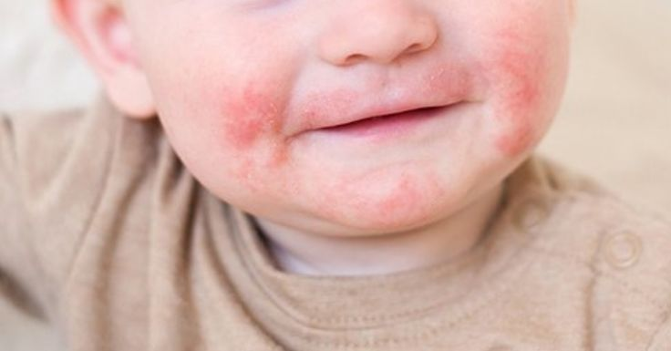
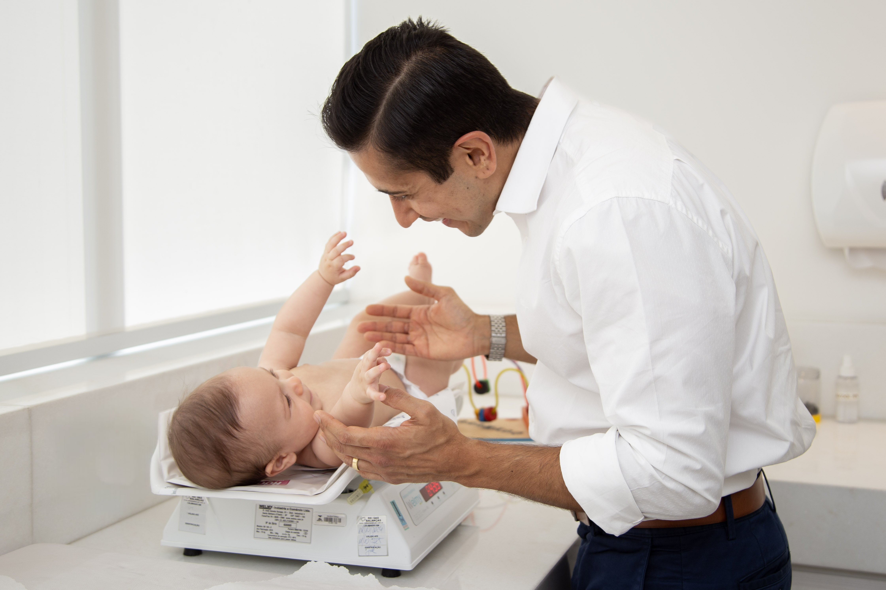
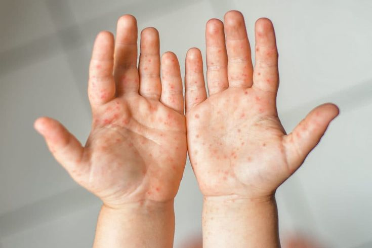

Cuidado pediátrico próximo, atento e individualizado para o seu filho.
Sou pediatra, e minha missão é acompanhar de perto o crescimento e o desenvolvimento dos pequenos, com escuta, acolhimento e cuidado em cada etapa. Desde o nascimento até a adolescência, ofereço uma atenção personalizada, que considera não apenas a saúde física, mas também o bem-estar emocional e o contexto familiar.

Acompanhamento próximo
Cada criança é única. O atendimento é construído com escuta atenta e tempo dedicado a cada família.
Medicina baseada em evidências
Condutas seguras e atualizadas, alinhadas às diretrizes da Sociedade Brasileira de Pediatria.
Atendimento humanizado
Mais que prescrever, é acolher. A família participa ativamente de cada decisão sobre a saúde da criança.
Disponibilidade entre consultas
Suporte e orientação à família nos momentos de dúvida — porque saúde infantil não cabe em horário comercial.

Pediatra em Belo Horizonte com formação sólida e olhar humano
Sou pediatra formado pela Faculdade de Medicina de Barbacena com Residência em Pediatria pelo Hospital da Polícia Militar de Minas Gerais e Residência em Medicina Intensiva Pediátrica na Santa Casa de Belo Horizonte.
Minha experiência inclui o cuidado humanizado de crianças saudáveis e o acompanhamento atento de pacientes que precisam de atenção especial. Atendo na Clínica MV, no bairro Funcionários, e na Clínica Numai, no bairro São Luiz/Pampulha, em Belo Horizonte.
- Formação Faculdade de Medicina de Barbacena - FAME
- Residência Hospital da Polícia Militar de MG
- Residência Santa Casa de BH
- Atendimento particular individualizado
Cada infância é única. O cuidado também.
Serviços pediátricos completos para acompanhar seu filho com atenção, presença e segurança em cada fase.

Alergias, infecções e doenças comuns
Diagnóstico e tratamento das condições mais frequentes da infância, com orientação clara para as famílias.
Saiba mais →Acompanhamento desde os primeiros dias
Consultas regulares para crescimento, desenvolvimento e bem-estar — do recém-nascido à adolescência.
Saiba mais →
Vacinação e prevenção
Orientação sobre o calendário vacinal, imunizações complementares e medidas preventivas.
Saiba mais →
Crescimento e desenvolvimento
Acompanhamento de marcos físicos, cognitivos, sociais e emocionais em cada fase da infância.
Saiba mais →
Diagnóstico e tratamento de doenças
Avaliação criteriosa e conduta personalizada para cada criança, com acolhimento da família.
Saiba mais →
Amamentação e introdução alimentar
Orientação personalizada para uma nutrição equilibrada, prazerosa e adequada a cada criança.
Saiba mais →Vamos conversar sobre a saúde do seu filho?
Atendimento particular humanizado em Belo Horizonte. Agende pelo WhatsApp.
Famílias que confiam no Dr. Pedro
Conteúdo confiável para famílias
Artigos sobre saúde, desenvolvimento infantil e dúvidas comuns da maternidade e paternidade.

Perguntas frequentes
Tire suas principais dúvidas sobre o atendimento. Não encontrou sua pergunta?
Fale comigo no WhatsAppAtendo em duas clínicas em Belo Horizonte:
Clínica MV — Rua Cláudio Manoel, 48, sala 1102 — Funcionários, Belo Horizonte/MG.
Clínica Numai — Avenida Coronel José Dias Bicalho, 620 — São Luiz/Pampulha, Belo Horizonte/MG.
O atendimento é exclusivamente particular. Após a consulta, é fornecido o recibo médico para que você possa solicitar reembolso junto ao seu plano de saúde, conforme as regras da operadora.
O ideal é que a primeira consulta aconteça entre 7 e 15 dias após o nascimento. Esse momento é importante para avaliar o ganho de peso, a amamentação e os primeiros cuidados com o bebê.
Nos primeiros meses, as consultas costumam ser mais frequentes, pois é um período de muitas mudanças e descobertas. Depois, o acompanhamento tende a ser mensal ou trimestral, conforme a idade e as necessidades da criança. Cada caso é único — o importante é manter o vínculo e o acompanhamento regular.
Leve a caderneta de vacinação, exames da maternidade, roupas confortáveis e, se possível, anote suas dúvidas. A primeira consulta é também um espaço de acolhimento para os pais.
Sim. As consultas preventivas são essenciais para acompanhar o crescimento, o desenvolvimento e a vacinação, além de identificar precocemente qualquer alteração. A prevenção é sempre o melhor caminho para uma infância saudável.
O pediatra continua sendo referência até o final da adolescência. Nessa fase, o foco passa a incluir temas como mudanças corporais, emoções, sono, alimentação e saúde mental, sempre com sigilo, empatia e respeito à individualidade do adolescente.
Entre em contato
O atendimento é particular e voltado para famílias que buscam acompanhamento próximo, preventivo e individualizado. Agende sua consulta com facilidade pelo WhatsApp.